Префектура Хиросима · Мияхама-онсэн · отель
«Сэкитэй»: рёкан, выстроенный вокруг сада
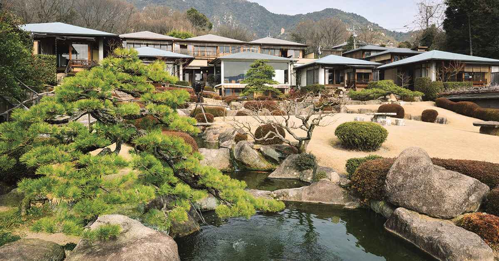
В «Сэкитэй» приезжают не за видом на Миядзиму, а за садом. Рёкан стоит на другом берегу Внутреннего моря, напротив острова, и здесь всё устроено так, чтобы смотреть на воду, камни и клёны. Комнат немного, но двух одинаковых среди них нет.
Сад
Сад как главный герой
Мияхама-онсэн лежит напротив Миядзимы, на берегу Внутреннего моря, и место это известно далеко не всем. В «Сэкитэй» сад вынесен в центр: гостиница занимает участок больше 4 900 квадратных метров, и корпуса поставлены так, чтобы каждый номер смотрел на воду и зелень. Пруд отражает небо, по нему плавают карпы, между зданиями спрятаны чайные домики и скамьи, а вечером в саду зажигают огни.
Каждая комната выходит окнами в этот сад, и по нему время от времени проходит чужая прогулка, но расстояния подобраны так, что смотреть друг на друга спокойно. Такую близость между номерами здесь считают частью замысла, а не помехой.
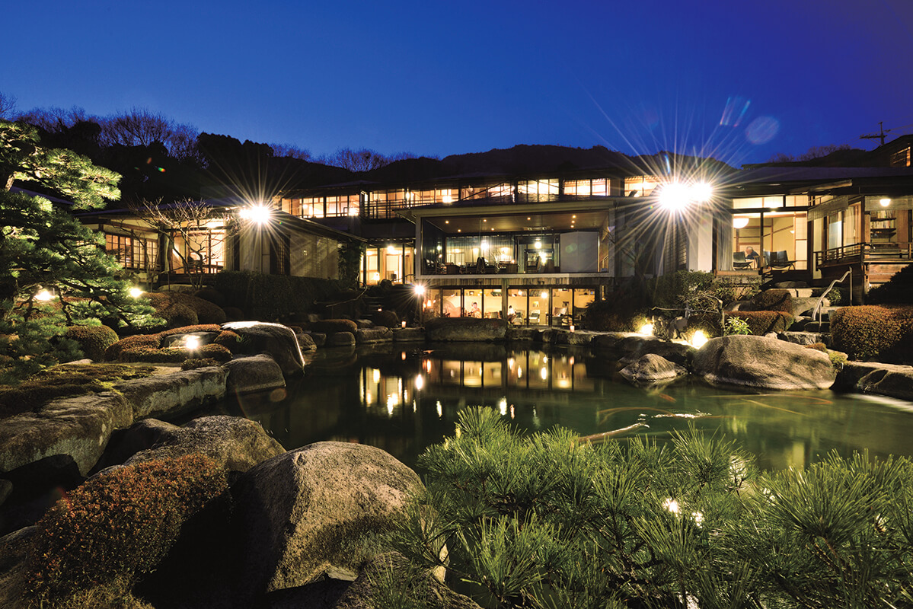
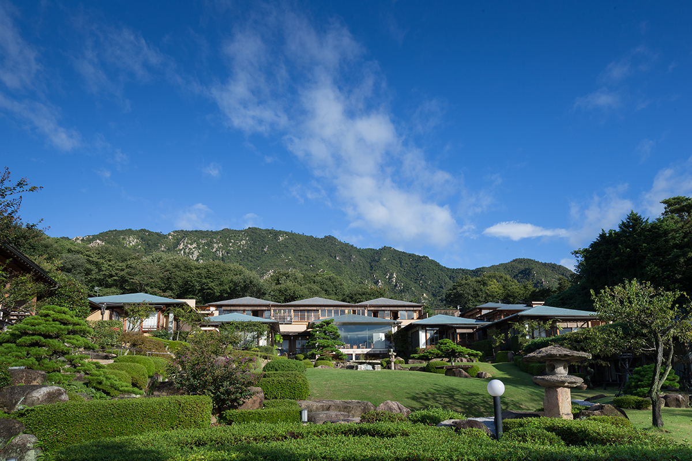
Номера
Двенадцать комнат без повторов
Всего в «Сэкитэй» двенадцать номеров: семь отдельных домов в стиле сукия, три комнаты на втором этаже главного корпуса и две в чайном павильоне адзумая. Планировки разные: где-то ванная находится в неожиданном месте, где-то две умывальные, где-то спрятана библиотека. Внутри одного дома тоже можно разойтись по разным уголкам и отдохнуть друг от друга.
Между номерами обустроены общие пространства: библиотека, бар и гостиная, где можно посидеть с книгой или попросить принести бокал вина к пруду. Мебель и книги подобраны так, чтобы они выглядели частью интерьера, а не просто обстановкой.
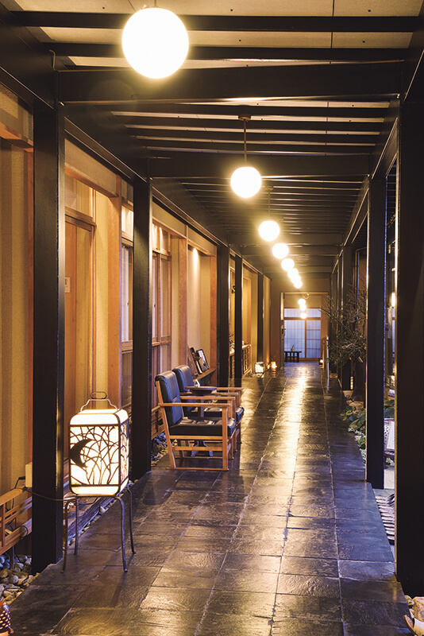
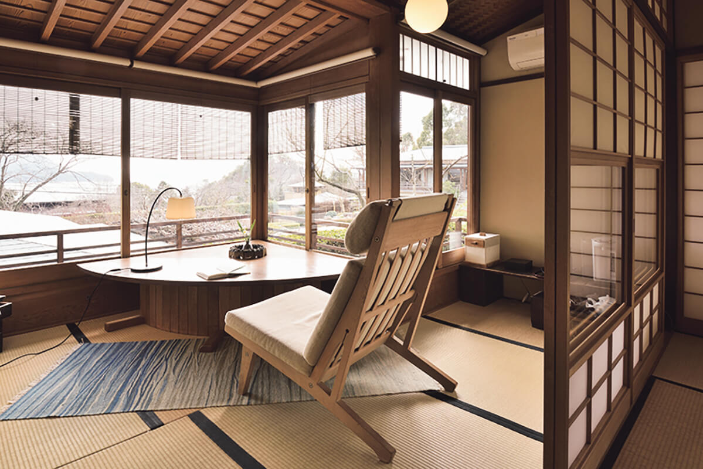
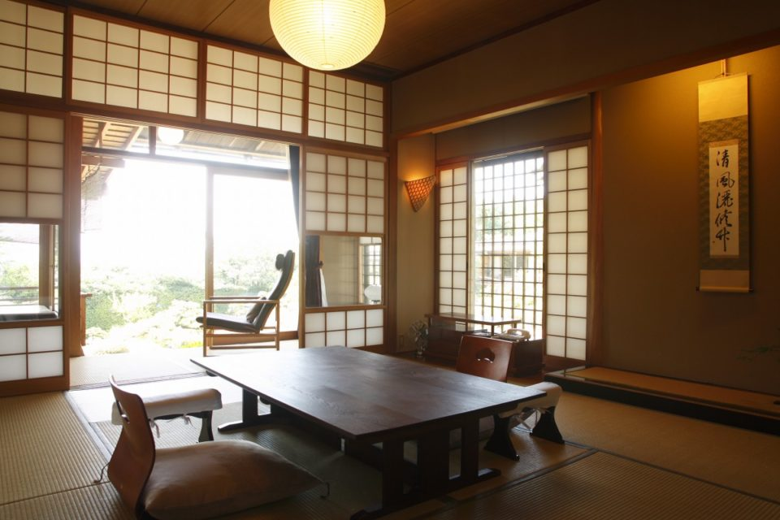
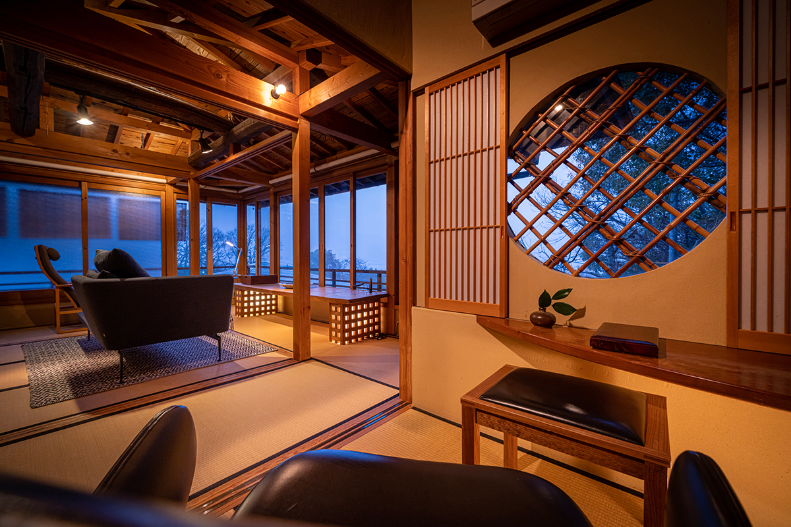
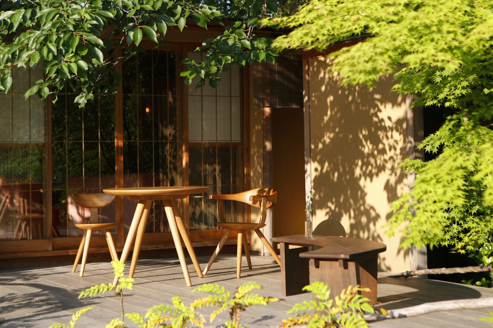
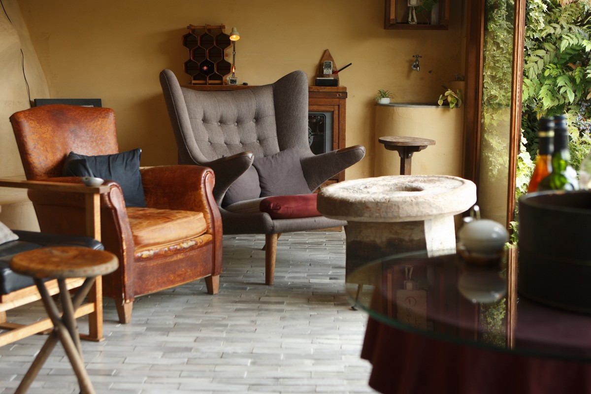
Ванны
Тихие купальни
Купальни в «Сэкитэй» тоже выходят к саду. Общая ванна разделена на мужскую и женскую половины, есть открытая ванна под небом и отдельные купальни, которые можно занять в любое время, даже глубокой ночью. Вода в онсэне Мияхама-онсэн слаборадиоактивная: её подогревают и разбавляют, а помогает она при болях в мышцах, суставах и расстройствах пищеварения.
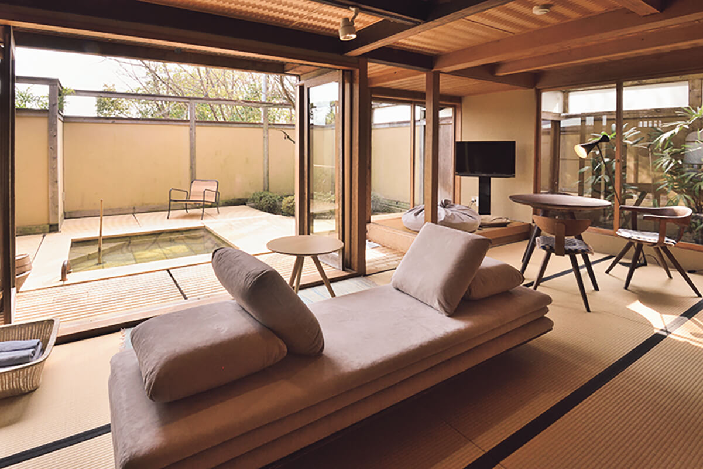
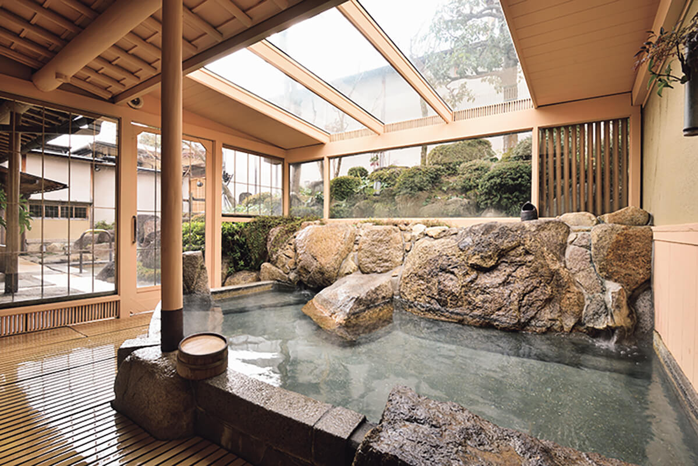
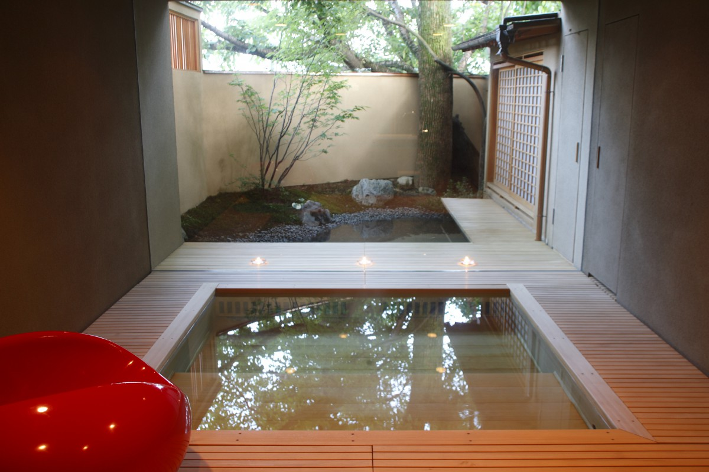
Кухня
Угорь, устрицы и рис в чае
Основа рёкана это ресторан «Уэно» из Миядзимагути, знаменитый своим рисом с угрём, который считают одним из лучших дорожных наборов Японии. Поэтому кухня здесь сильна прежде всего блюдами из угря, а их готовят разными способами круглый год. Зимой и в начале весны к столу добавляют устриц из Миядзимы. Ужин подают в номере как кайсэки, и его готовит молодой шеф, который бережно обходится с традицией, но не боится нового.
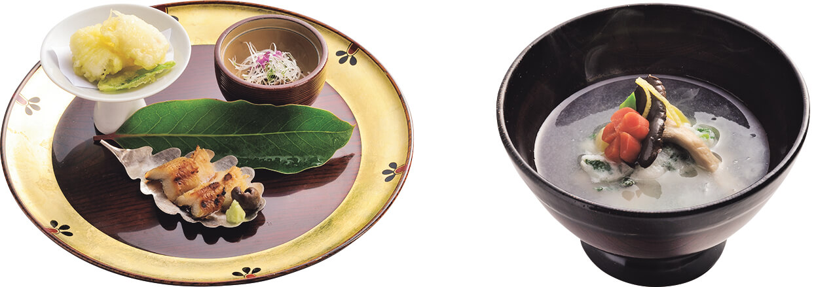
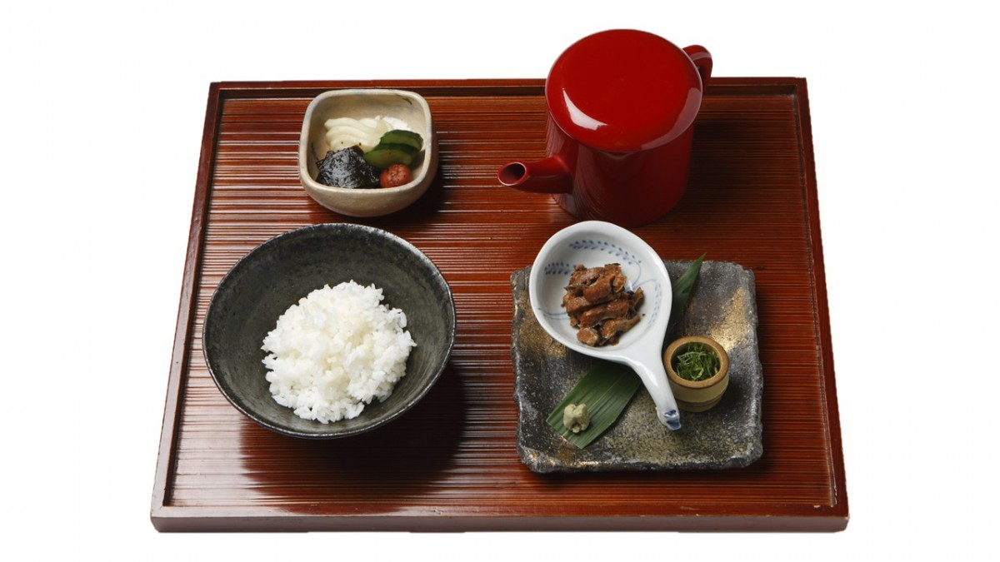
Завтрак
Омлет, который держат в миске
Завтрак накрывают в столовой с 7:00 до 10:00. Перед ним подают кашу из красных бобов, а главное блюдо готовят у гостя на глазах: омлет дасимаки-тамаго кладут столько бульона, что он получается совсем мягким, и потому его приносят в глубокой миске, а не на тарелке. К нему идут сушёная рыба, мисо-суп и другие небольшие блюда.
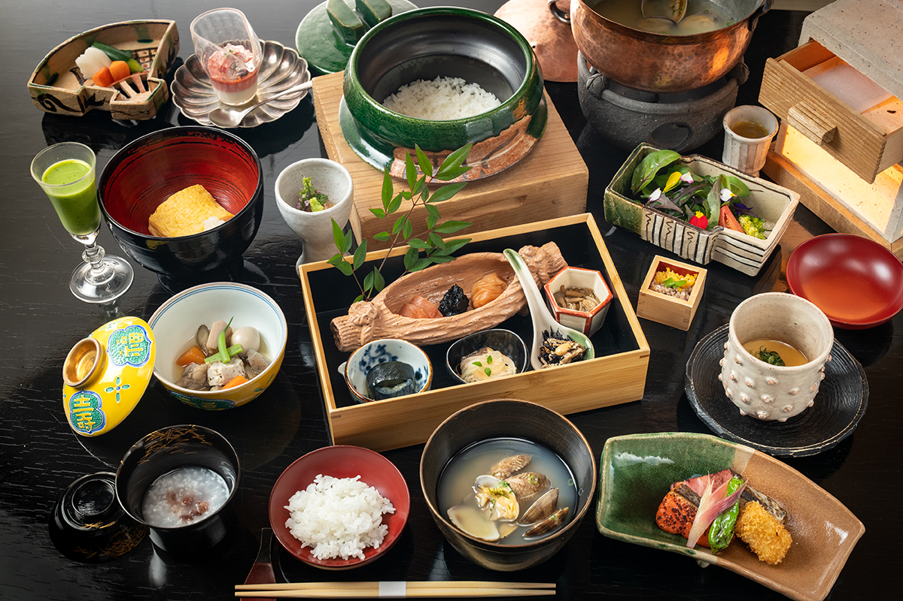
Рёкан «Сэкитэй»
- Адрес
- префектура Хиросима, Хацукаити, Мияхама-онсэн, 3-5-27
- Телефон
- +81 829-55-0601
- Часы работы
- заезд 15:00, выезд 10:20, поздний выезд до 12:00
- Номера
- 12
- Цены
- от 39 600 иен за человека с двумя приёмами пищи, с налогом и обслуживанием
- Ванны
- онсэн Мияхама-онсэн, общие купальни и открытая ванна, есть отдельные купальни
- Сайт
- sekitei.to
Фото: Ко Миядзи, Юити Ногути.